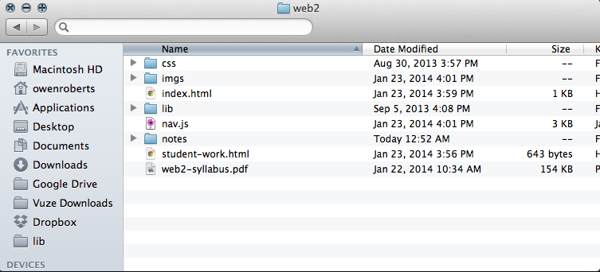

Introduction to JavaScript
JavaScript is a scripting language, a lightweight programming language, specifically designed for programming the elements of web pages. Today we are going to look at some basic concepts in JavaScript and computer science in general which will allow us to interact with the browser and begin making dynamic designs. When we talk about dynamic design we mean making a design which changes given various inputs and interactions. The power of writing code is that we can build designs that react and change to various input, whether it is time, user interaction, data or other sources.
What we will need in this class:
Everything we do in class will require a text editor and a browser. I prefer to use TextMate and will do class demos using TextMate 2, which costs $50. It's a good investment if you like it, but their are free editors that are just as effective. For PC users, I recommend Notepad++ which is free. Sublime Text is a popular editor for both operating systems. If you have experience with Dreamweaver and prefer to stick with that I won't hold it against you.
I use Chrome as my primary browser and I recommend you do the same. However, Safari, Opera and Firefox are also good options.
An important browser tool is the Console, which can be used for debugging and writing or testing code. Chrome users can select View > Developer > JavaScript Console or press ⌥⌘J. For Safari, you have to enable the Developer menu in Preferences and then go to Develop > Show Error Console, or ⌥⌘C. Firefox is Tools > Web Developer > Web Console, or ⌥⌘K.
If you have a laptop, I recommend bringing it to class. We will be writing a lot of code in class and it will just make it easier for you to keep track of files. Of course, the class room has a bunch of computers which you can use if you don't have a laptop.
File structure if very important for development. It may seem like arbitrary conventions for organizing files, but you will find it will save you many headaches in the future. Don't be afraid to ask about proper file structure. Our projects will follow the same conventions with a main directory, which contains the index.html file and sub directories for images, CSS files, and JavaScript files.
You also will need an FTP client. Cyberduck or FileZilla are both decent free options. Look at the FTP instructions in the navigation menu for further information.
Let's get into some JavaScript
First, an introduction by Douglas Crockford, a well known JavaScript architect and text book writer. We'll watch the first ten minutes.
Great, so now that we know a little bit about the origins of JavaScript we're going to write some. We'll start slow today and pick up over the next two weeks. Our assignment for this week is about getting user input to change a design. We'll learn some basic ways to get input, store it and use it.
The script tag
The <script> tag is an HTML tag that is used to embed JavaScript into web pages. We covered HTML tags last semester, and will review them next week. This can be done by embedding an external file, similar to attaching a CSS file. That would look like this:
<script type="text/javascript" src="myjs.js"></script>
We can also write JavaScript directly into an HTML file:
<script type="text/javascript"> // // JavaScript goes here // </script>
While both methods are acceptible, it is typically better to use external files, especially for JS files that are long or need to be used more than once. Internal JS is good for functionality that will only be used once.
JavaScript can also be written directly into HTML element tags. This is typically done to trigger events.
<body onload='init();'></body>
<button onclick='launchFunction();'>Click here.</button>
Let's write some JavaScript
We're going to make a file called myscript.js and embed it into a web page. Use this file to try the following examples.
document.write('Hello World.');
document.write('<h1>This is an HTML page.</h1>'); document.write('<p>This is the first paragraph.</p>');
We can use JavaScript to write text on an HTML document and create HTML markup. Let's look at a few things we can do with JavaScript before we go over syntax.
We can use events to trigger actions:
<button onclick='alert("I am a button");'>Click me!</button>
Or change HTML content:
<button id="button" onclick='document.getElementById("button").innerHTML="Button clicked!";' >Change text.</button>
Or change CSS styles:
<button id="cssbutton" onclick='document.getElementById("cssbutton").style.color="hotpink";'>Change text color.</button>
Syntax
So now that we've seen some examples of JavaScript, let's talk about the syntax that these examples use.
JavaScript commands are referred to as statements. A block of JavaScript code is a sequence of statements that are executed by the browser.
The semi-colon in JavaScript is optional. Semi-colons are used to separate statements. Some languages use it, like Java and C++, while other like Python do not. JavaScript lets you do either, which is nice for beginners and programming cowboys, but there are many cases in which leaving semi-colons out will cause problems, so it is considered best practice to use semi-colons at the end of each statement and we will be adhering to that convention in this class.
JavaScript code blocks are separated in functions by curly brackets { .... }. We will go over this more when we start writing functions.
Line breaks are not necessary in JavaScript if you are using semi-colons, but they are considered good format for writing code that is legible and well organized. Many libraries are later "minified" by removing extra characters like line breaks.
JavaScript is case sensitive. Writing getElementbyId is wrong. So is getElementByID. The correct method is getElementById. Variables are written in what is known as "camel case", meaning that the first letter is lowercase, and words are separated using capital letters, instead of dashes or underscores. myVariable is correct. MyVariable and my_variable are incorrect.
JavaScript ignores whitespace. myVariable = 100; is the same as myVariable=100;.
You might be wondering what's the deal with all those quotation marks? You can use either double quotations or single quotations to separate strings as the values for variable and function calls. It is best to use one or the other. The reason we use both it because we often pass code that requires a string with strings written inside of it like in our onclick examples above.
Comments
Comments are an important aspect of JavaScript that are not part of the executed program. Comments are necessary both as ways to communicate with other developers and as organizational markers for us as coders. You can comment out a single line of JavaScript with a double back slash: //. Multiple comment lines use /* .... */ syntax:
/* everything inside here will be commented */
Variables
In our assignment today we will need to use variable to store information. Variables are references to places in the computer memory that store information. In JavaScript variables are special because everything can be written as a variable, as we will talk about more when we learn about objects. JavaScript uses numbers and strings and has loose variable typing which we will demonstrate in the console.
Declaring a variable looks like this: var x = 10;. It is also acceptable to write x = 10; but it is better practice to declare variable with a var keyword. A variable that is not assigned, such as var index; will have the value undefined. String variable are declared like this: var myString = "Hello World.". Boolean variables, which we will cover further next week, look like this: var isValue = false;. We will cover more data types in depth next week.
Events
Events in JavaScript are functions that react to interactions with the browser, such as user clicks, document loading and window scrolling. We will cover functions more in depth later, but for now let's talk about some basic user interactions.
onclick() executes when an element is loaded.
<script> document.getElementById('onclick').onclick = function(){ alert('The button has been clicked.'); }; </script>
onchange() executes when an input form is changed.
<script> document.getElementById('onchange').onchange = function(){ alert(document.getElementById('onchange').value); }; </script>
This is one way to get data from a user, of which there are many. We can use forms, input boxes and confirmation alerts, along with other events to get input.
A confirm alert is similar to the alert function we've already used, but prompts the user to choose "Ok" or "Cancel".
<script> function confirmButton() { var x; var r=confirm("Confirm this popup."); if (r==true) { x = "You pressed OK!"; } else { x = "You pressed Cancel!"; } document.getElementById("confirm").innerHTML = x; } </script>
A prompt asks the user for input.
<script> function promptButton() { var r = prompt("Enter your name.", "Name"); if (r != null){ document.getElementById("prompt").innerHTML = "Hello, " + r + "."; } } </script>
We can also use JavaScript forms.
<script> function submitText() { var result = document.getElementById("textbox").value; alert(result); } </script>
Look at the link in Resources at the bottom of the page to learn more about forms.
Project critiques
This semester we're going to spend a little time each class looking at projects that use JavaScript and talking about whether we like them or not. Today we're going to look at a data visualization made an author, Douglas Coupland, and musician, Paul Humphreys of Ochestral Manoeuvres in the Dark, that I like.
Resources